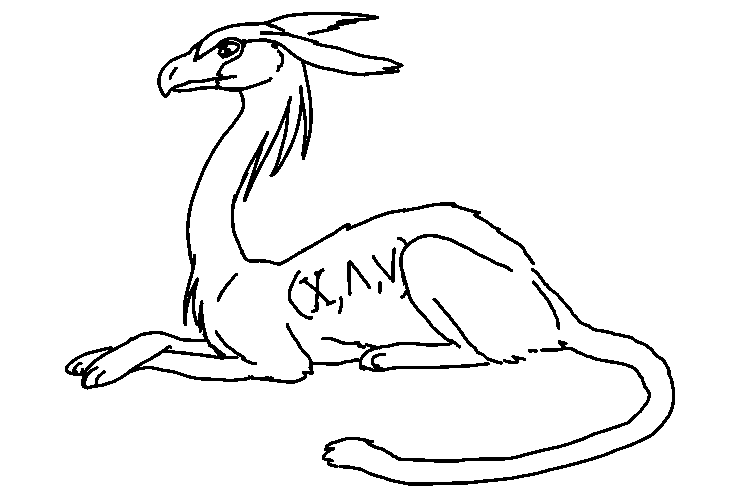

An algebraic structure (also called "an algebra") consists of a set and a collection of finitary operations on that set, closed under composition, that satisfy certain identities. This is an abstract definition, so the following sections of this blog post are dedicated to concrete examples.
But first– why bother with such an abstract idea at all? An algebra boils down to "a bunch of stuff, plus ways to manipulate that stuff according to a formal system of rules." Computer scientists study algebras because computers operate on "a bunch of stuff" (digital data) according to a formal system of rules, so algebras are useful for designing and modeling aspects of computation. Philosophers study algebras because "a bunch of stuff" (complicated concepts like "truth" and "logical ideas") can be disambiguated and related to each other via formal systems of rules, so algebras are useful for clarifying and suggesting novel discourse about philosophical concepts.
Computer scientists and philosophers additionally benefit from two important aspects of an algebraic structure’s collection of operations: that the operations are finitary, and that the collection is closed under composition. "Finitary" means that the operations take a finite number of arguments. "Closed under composition" means that the collection contains every operation defined by feeding the outputs of some operations into the inputs of some other operation. Finite things are easier to reason about than infinite things, but making finitary operations composable allows you to build complex structures out of simple finite primitives. So computer scientists and philosophers can create models that are simple to define, but complex enough to have interesting implications.
Mathematicians are also interested in algebraic structures. Specific varieties of algebras are central to the fields of see group theory, see mathematical logic, and number theory. The field of mathematics concerned with algebras irrespective of variety is called universal algebra. Universal algebra is useful because it unifies results from more specific fields of mathematics and suggests general results which could be applied to problems in more specific fields. But I like universal algebra for the same reason that I like zoology. There’s something strikingly lifelike about a simple structure giving rise to to complex behavior, like a sequence composed of only 4 types of nucleotides encoding an entire creature.
Examples
Lattices

Algebras are often given in terms of a signature: a list of symbols that characterize the algebraic structure. In the case of lattices, a signature is (X,∧,∨), where X is the set of elements of the algebra, and ∧ and ∨ are commutative and associative operations. ∧ and ∨ aren’t the only operations on a lattice, since the collection of operations is closed under composition, but they characterize the structure in the sense than any lattice operation can be written in terms of ∧ and ∨. For all a, b in X, the following identities hold:
L1: a ∨ (a∧b) = a
L2: a ∧ (a∨b) = a
But what do ∧ and ∨ mean? That depends on the specific lattice at hand. Consider the case where X is the set of natural numbers that divide 12: {1, 2, 3, 4, 6, 12}. Then define "a ∧ b" to equal "the largest number in the set that divides both a and b" and "a ∨ b" to mean "the smallest number in the set that is a multiple of both a and b", so that 3 ∧ 6 = 3 and 4 ∨ 6 = 12.
Now take the same set {1, 2, 3, 4, 6, 12}, but this time define "a ∧ b" to equal "the largest element in the set that is less than or equal to both a and b" and "a ∨ b" to equal "the smallest element in the set such that a and b are less than or equal to that element".
These cases hint at another way to define lattices. Let’s take the lattice (X,∧,∨) and put a binary relation ≤ on X that obeys the following conditions for all a, b, c in X:
A binary relation that satisfies the three properties above is called a partial order. It’s "partial" in the sense that there can exist a, b such that neither a ≤ b nor b ≤ a. Now define a ∨ b = c if c is the "greatest lower bound" of a and b (c ≤ a and c ≤ b, and for all d in X such that d ≤ a and d ≤ b, d ≤ c), and a ∧ b = c if c is the "least upper bound" of a and b (a ≤ c and b ≤ c, and for all d in X such that a ≤ d and b ≤ c, c ≤ d.) The two example lattices on {1, 2, 3, 4, 5, 12} given above implicitly used this definition. For the first example, a ≤ b means "a divides b", and for the second example, a ≤ b in the usual sense of "≤". In fact, defining ∧ as greatest lower bound and ∨ as least upper bound for any ≤ satisfies L1 and L2, so that all lattices can be defined in terms of a partial order.
Finite lattices lend themselves well to visual representation via Hasse diagrams. For any lattice (X,∧,∨) , determine the corresponding partial order ≤ and draw the elements of X with b above a if a ≤ b. Then, for every distinct c, d, e such that a ∨ c = d and a ∧ c = e, draw lines from d down to a and c and lines from e up to a and c.
A number theorist might be satisfied just to consider lattices of divisors of some number, but what are the rest of us to do with them? Computer scientists utilize lattices to model programming language semantics, design concurrent systems, and more. Philosophers concern themselves with a specific variety of lattice that we’ll get to shortly.
Examples in universal algebra texts frequently refer to lattices or groups (more on those in a bit). Groups and associated structures are familiar to most people with a background in mathematics, so lattice properties often provide counter-examples to properties that a novice mathematician would naively expect to hold for algebras.
Groups
Anyone studying contemporary mathematics will eventually run into these guys. A group signature is (X,*,i,−1) where * is an associative operation that takes two arguments and i is an operation that takes 0 arguments, which means that it picks out some constant element in X. Allowing 0-argument operations is standard practice in universal algebra because it allows one to define distinguished elements of X without complicating the definition of an algebra by adding an extra set of "distinguished elements". The result of 0-argument operation never depends on input: it always produces a single unique element.
* and i follow these equivalences (where "i " stands for "the element of X picked out by the operation i "):
G1: a * i = a
G2: a * a−1 = i
The element i is generally called the "identity", and "a−1" the "inverse of a". Now for some examples of groups:
How does this relate to thought? Let 0 mean "false", 1 mean "true", ∧ mean "and", ∨ mean "or", ¬ mean "not", and the members of X be logical propositions. A logical proposition is a statement that are either true or false: "(X,∧,∨) is a lattice", "Paris is the capital of France" and "London is the capital of France" are propositions, "Paris", "is the capital", "hello!" and "this statement is false" are not. We can use this Boolean algebra to build bigger propositions out of smaller ones: if p represents "Paris is the capital of France" and l represents "London is the capital of France", l ∧ ¬p represents "London is the capital of France and it is not the case that Paris is the capital of France". If we were to recall some basic facts about the geography of France, we would determine that l is false (l = 0), so by B1, l ∧ ¬p is false.
The boolean algebra ({0,1},∧,∨,¬,0,1) is essential to computer science. Modern computers encode information as sequences of 0s and 1s stored as electric charge in transistors. Computer hardware implements physical logic gates that act like the ∧, ∨ and ¬ operations to evaluate and modify data.
For any set X, the set of all subsets of X forms a boolean algebra. Let 2X represent "the set of all subsets of X", ∧ represent set intersection (a ∧ b is "the set of all elements in a and b"), ∨ represent set union (a ∨ b is "the set of all elements in a or b"), ¬ represent set negation (¬a is "the set of all elements not in a), 0 represent the empty set (the set that contains no elements) and 1 represents the whole set X.
Boolean rings
In the 1930’s, mathematician Marshall H. Stone demonstrated that Boolean algebras can be converted to a type of ring called a Boolean ring, and vice versa. Examining Boolean algebras from the perspective of rings is a powerful tool within model theory, the study of which mathematical structures satisfy given collections of consistent logical sentences.
A Boolean ring is an algebra (X,+,−,*,0,1) such that (X,+,0,−,*) is a ring with identity and for all x in X:
BR1: x * x = x
Given a Boolean algebra (X,∧,∨,¬,0,1), define the corresponding Boolean ring (X,+,i,−,*,0,1) by setting:
a + b = (a∧¬b) ∨ (¬a∧b)
a * b = a ∧ b
− a = a
To go from the Boolean ring (X,+,−,*,0,1) to the Boolean algebra (X,∧,∨,¬,0,1), set:
a ∨ b = a + b + a * b
a ∧ b = a * b
¬a = 1 + a
The Boolean ring derived from the Boolean algebra ({0,1},∧,∨,¬,0,1) has * and + operations that look like a computer’s one-bit multiplication and addition operations: adding 1 + 1 "overflows" the bit, wrapping it back around to 0. In general, you can think of + as an "exclusive or" operation. For a, b in {0, 1}, a + b is 0 if a = b, and 1 if a ≠ b. For the Boolean ring derived from the Boolean algebra of subsets (2X,∧,∨,¬,0,1), a + b is the set of all elements either in set a or in set b, but not both.
Conclusion
Hopefully I’ve imparted some intuitive sense for what an algebra is and why someone would care. While I’ve tried to keep this post light on prerequisite knowledge, I suggest that anyone who wants to look further into universal algebra first study the basics of abstract algebra (at least enough to explain what an ideal is and why it’s interesting). Many theorems in universal algebra are generalized forms of results from elementary abstract algebra, and these theorems become more comprehensible and exciting when one recognizes what they’re generalizing.
While I was researching sources for this post, Google Books gave me a mathematician’s 1989 appraisal of universal algebra:
"The universal algebraist has a peculiar vision and point of view that set him apart from specialists in logic and category theory or any other field of mathematics [...] he is not committed to any traditional approach. In fact, he hopes to find completely new kinds of algebras; interesting types of structures in these algebras that is absent or not clearly revealed in groups, rings and modules; and completely new techniques for revealing the structures […] He is likely to be especially interested in finite algebras, and passionately committed to the investigations of certain types of questions concerning his "algebras" that, to a category theorist, a logician, or classically trained algebraist, would appear to be either obscure, misguided, uninteresting or just hopefully intractable."
But on a more flattering note:
"An incredible diversity of complex systems is implicitly admitted for consideration and the only actual limitation on the generality of results obtained is the natural desire to achieve results of some depth. This emphasis on examining an almost unlimited spectrum of diverse complex systems is, perhaps unintentionally, in conformance with an obvious quality of the world we live in; and it is, I think, a virtue which will help these disciplines to survive into the twenty-first century and beyond."
References
Burris, S., & Sankappanavar, H. P. (2011). A Course in Universal Algebra (Graduate Texts in Mathematics, 78) http://www.math.uwaterloo.ca/ snburris/htdocs/ualg.html
Dummit, D. S., & Foote, R. M. (2003). Abstract Algebra, 3rd Edition (3rd ed.)